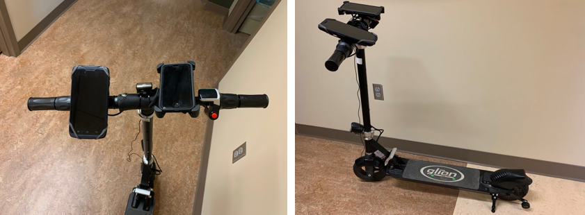

Project 1: Mobile crowdsensing for automated sidewalk condition evaluation
Introduciton
Sidewalk is a critical urban element and a fundamental infrastructure to walk and socialize. If without well maintenance, its poor conditions are risky to pedestrians, in particular wheelchair users. Traditional monitoring methods are labor-intensive and expensive, while most new methods are for roadway not for sidewalks, and may not be appropriate for large-scale application (e.g., citywide).
In this research, we developed a computational framework for automated sidewalk condition evaluation (ASCE). It takes the advantage of vibration signals from built-in mobile sensors through crowdsourcing scooters. We compared different experiment settings that affect sidewalk quality assessment , and applied it to Johnson City, New York.
Finally, a sidewalk anomaly map and a sidewalk condition map of road segmentations are built using Iphone at a speed of 5-6mph.
Methodology
Project Design
The ASCE framework includes three major steps:
Step 1:data collection with built-in mobile sensors and electronic scooters;
Step 2, Data preprocessing (moise removal and acceleration reorientation) and sidewalk anomaly detection;
Step 3, comparison of different experiment settings and result visualization.
Reorientation
The most important data preprocessing is reorientation. This is because the coordinate system of a mounted smartphone is different from that of a scooter. It is necessary to align them to avoid any potential mismatching errors. Mobile phones are mounted on the scooter handlebar parallel to the sidewalk surface, such that the z-axis record can capture the vertical vibration signals originated from any sidewalk defects. Euler Angles is an efficient way for acceleration reorientation.
Anomaly Detection
The acceleration data and GPS with the same timestamp are paired to make it possible to locate the anomaly we detect. Then an algorithm is built to detect anomalies using reoriented acceleration data. This algorithm consists of three major steps: peak detection, noise removal, and pattern matching. These steps are processed subsequently as follows.
Step 1: Peak detection, Two parameters (A and B) and a sliding window consisting of 100 observations (100 observations are collected every second) are used to detect Global peaks. Boundary of peaks is created as A times of standard deviation of observations in each sliding window. The peak boundary is shown as the green boundary in Fig. (A)., points larger than that line will be detected as peaks. Then, peaks with overly-large value are removed using parameter B as a threshold limit.
Step 2: Data smoothing, Parameter C is used to remove the peak points we derived from step 1 with extremely small values. These points with small values are noises derived from normal roughness or bumpy riding.
Step 3: Pattern matching, Based on our empirical observations, the vibration map will change abruptly and then goes to the normal surface. Different directions when we hit the anomalies and then goes to the normal surface. Different directions when we hit the anomalies (upwards or downwards) causes different vibration change patterns, shown as Figure (B) and (C). If our detected peak points after step 2 in our sliding window fit our patterns, we label them as anomalies.
(A) Noise removal; (B) and (C): Two filters of pattern matching ; (D) The identified sidewalk anomalies based on (A).
Result
Team
John Frazier: Director
Chengbin Deng: Director, Designer
Kevin Heard: Project advisor
Jay Newberry: Project advisor
Huihai Wang: Lead Researcher
Katie Bulger: Researcher
Victor Santana: Researcher
Carmen Corrales: Researcher
Ailing Jin: Researcher
Project 2: Quantify walkability with publicly available data
In this study, we proposed a computational framework for walkability measurement. Three major steps of this framework include web scraping of publicly available online data, determining varying weights of variables, and generating a synthetic walkability index.